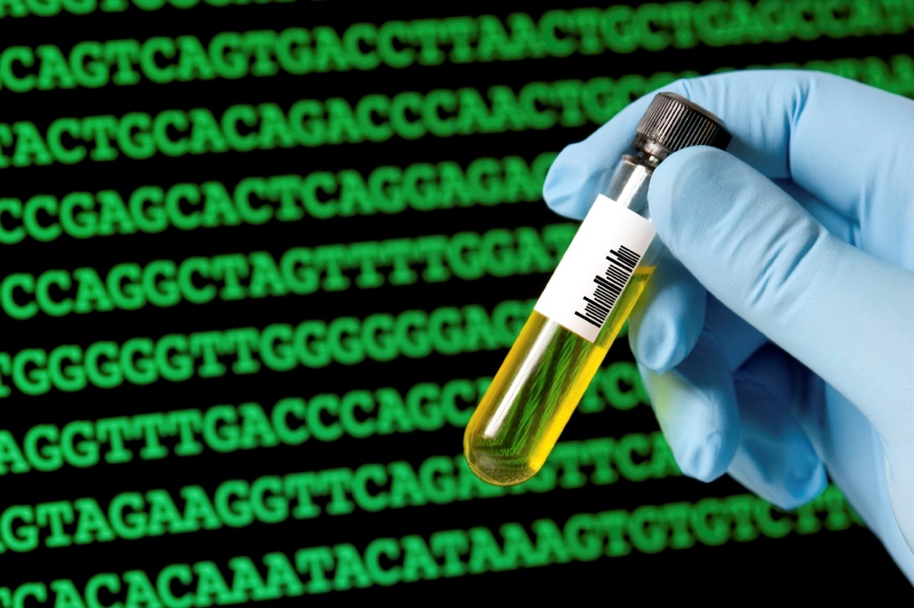
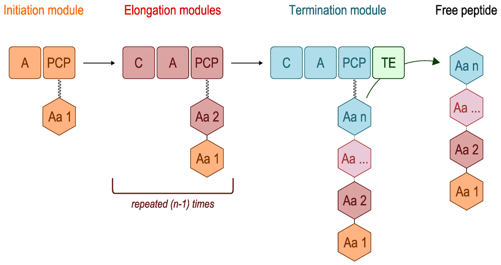
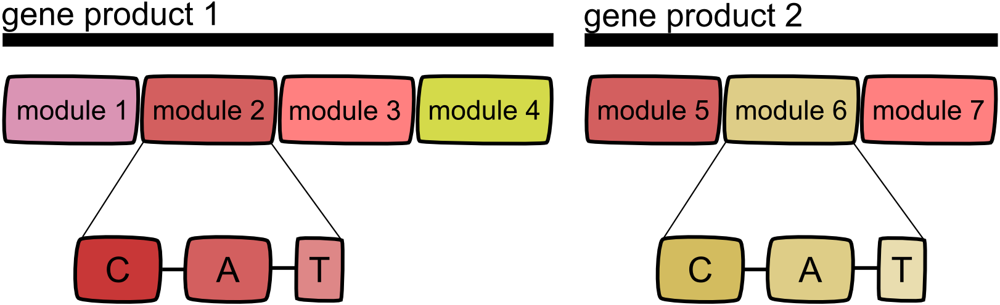
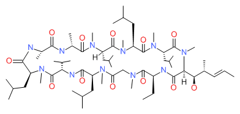

Introduction to the World of Synbio
Synthetic biology, or synbio, is about designing functional systems with the tools of life! In its simplest form, it is the combination of specific standard parts, assembly protocols, and genome framework (for example, bacteria or yeast) to create biological systems capable of unique functions. Synbio continues to grow into an important industry encompassing principles from several disciplines, including biotechnology, molecular biology, computer science, and engineering. Biofuels, vaccines, and insulin have all been expressed and purified in various organisms thanks to synbio.
The field of synthetic biology is motivated by multiple interests. Synbio can be viewed as a means to create innovative solutions to current problems. For example, Modular Genetics Inc. has used synbio to approach a two-fold problem. Organic chemicals are predominantly made from petrochemicals, and billions of pounds of soybean hulls are unfortunately wasted each year. Modular has engineered microorganisms that convert soybean by-products to a recyclable form. This reduces dependence on petrochemicals while simultaneously recycling organic waste.
The production of economically valuable products is a growing use of synthetic biology. One such product is isoprene, a chemical used in the synthesis of rubber. Currently, main sources of rubber include rubber trees and synthesis using petrochemicals. The gene for the enzyme responsible for converting dimethylallyl pyrophosphate to isoprene in plants has been isolated and expressed in microorganisms, leading to a cleaner and more environmentally friendly method of extraction!
Synbio has even been used as a means to create art! In 2004, a collaboration between two companies, Florigene Ltd. and Suntory Global Innovation Centre, resulted in the successful growth of a blue rose. Creation of the transgenic blue rose involved expressing a new gene for blue pigment and repression of other plant proteins involved in natural colour production.

When discussing synbio, it would be hard not to mention the International Genetically Engineered Machine (iGEM) competition, the largest annual gathering of synthetic biology enthusiasts! This competition encourages high school and university students to design unique biological systems from standardized parts, called BioBricks. Undergraduate and graduate students select an iGEM subject area (track) for their project focus, which best aligns with the overall application of their project. Tracks range in options from Human Advances to Art & Design. iGEM and synthetic biology give students the chance to let their creativity flourish, and literally bring their ideas to life!
Non-Ribosomal Peptide Synthesis (2016 Project!)
Intro
All living organisms contain ribosomes, molecular machines made up of proteins and rRNA that perform translation of messenger RNA (mRNA) to protein, within their cells. More recently, cellular machinery that synthesize proteins without the use of ribosomes, termed nonribosomal peptide synthetases (NRPS), have been discovered in some bacterial and fungal species. These enzymes consist of a chain of modules, each module contributing a specific amino acid and modifying the growing peptide as it is passed along the chain. In this manner, a unique peptide can be synthesized without the traditional ribosomal unit or mRNA. The genes necessary to create one specific NRPS peptide are usually found in close proximity to each other in the genome as an operon or gene cluster.
Modules and Domains
Multiple modules make up the nonribosomal peptide synthetase, and within each module are multiple domains. Three domains are found in virtually every module: the condensation domain (C), adenylation domain (A), and thiolation domain (T or PCP). Additional domains may be included to provide unique modifications to the growing peptide. Common modifications include oxidation, reduction, methylation, and epimerization.
Assembly
Elongation modules work in consecutive order to build a peptide. Each module is specific for a certain amino acid, determined mostly by the A-domain. This domain activates the specific incoming amino acid for attachment to the thiol-arm of the T-domain through the formation of amino acid adenylate. Important residues within the active site of the A-domain ensure that only the proper amino acid is activated. The amino acid is then bound to the module via a thioester bond at the T-domain. The C-domain catalyzes the formation of a peptide bond between the growing peptide and new amino acid. When this occurs, the growing peptide is moved along the chain to the next module. When the peptide reaches the final domain of the last module, the thioesterase domain (TE), it is cleaved from the enzyme by hydrolysis or by intramolecular cyclization.
Applications
Nonribosomal peptide synthetases make many important medicinal compounds such as cyclosporin, initially isolated from a fungus and used as an immunosuppressant for transplant patients. The unique structure of cyclosporin highlights several of the unique modifications achieved through NRPS. It contains a single D-amino acid, as opposed to strictly L-amino acids that ribosomal peptide synthesis can only incorporate. Cyclosporin is also cyclic, which confers greater stability to it as a biochemically active compound. Hence, the unique properties of NRPS make it a promising system to study drug development.
Image References
1. Desriac, F., C. Jégou, E. Balnois, B. Brillet, P. Le Chevalier, and Y. Fleury. 2013. Antimicrobial peptides from marine proteobacteria. Marine Drugs 11(10):3632-3660.
2. The Scientific Consulting Group, Inc. Cyclosporine structure. 2016. LiverTox: Clinical and Research Information on Drug-Induced Liver Injury. United States National Library of Medicine. Web. 17 Jun. 2016.
3. Team Heidelberg. Modular organisation of NRPS. 2013. Non-Ribosomal Peptide Synthesis - Get to know the theory. iGEM. Web. 17 Jun. 2016.
4. Walsh, Christopher. Elongation of the nonribosomal peptide. 2010. Microbiology. W. W. Norton & Company, Inc. Web. 17 Jun. 2016.